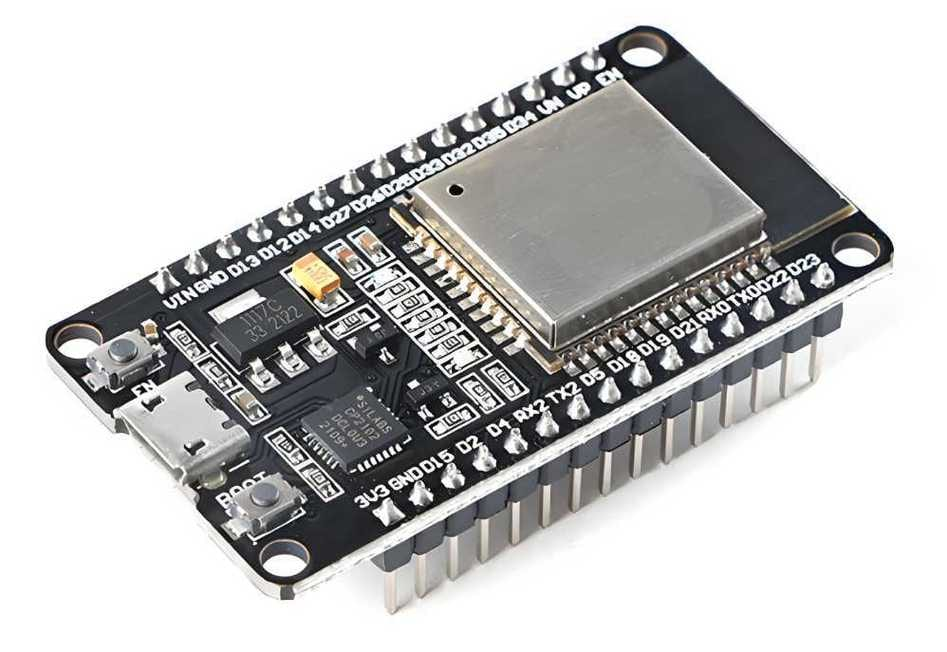

Seeed Studio XIAO ESP32S3

拇指大小的 ESP32-S3 微型开发板，双核 LX7 主频 240MHz，板载 8MB Flash 与 8MB PSRAM，自带锂电池充电管理，11 个 GPIO，是可穿戴与小型物联网原型的性价比之选。
客观评测
XIAO ESP32S3 采用乐鑫 ESP32-S3 双核 LX7 240MHz，配 8MB Flash 与 8MB PSRAM，支持 Wi-Fi 与 BLE 5.0，尺寸约 21×17.5mm。板载锂电池充电管理与 USB-C（USB-OTG），预留摄像头 FPC 接口，11 个 GPIO 覆盖常见场景，深度睡眠电流约 14μA，适合电池供电的微型物联网节点。
主观点评
第一次捏到 XIAO 时会怀疑这么小的东西靠不靠谱，跑起来就知道它相当能打：Wi-Fi 连网、推传感器数据、接摄像头做小识别，几十块的价格给了双核加 PSRAM 的配置。做胸针、吊坠、小车遥控器这类项目特别顺手。缺点也明显——引脚细小、焊接费眼，调试时最好配个扩展底板。对喜欢“把项目做小”的玩家，它几乎没有替代品。
优点与不足
- 21×17.5mm 极致小巧，可嵌入可穿戴与小型设备
- 自带电池充电与 8MB PSRAM，开箱即可做联网视觉原型
- Arduino/ESP-IDF/MicroPython 全支持，价格仅几十元
- 引脚全靠邮票孔引出，焊接与测试需一定动手能力
- 板载天线性能有限，远距离通信场景需外接天线版本
参数规格
| SoC | 乐鑫 ESP32-S3 |
|---|---|
| CPU | 双核 Xtensa LX7，主频 240MHz |
| Flash / PSRAM | 8MB Flash / 8MB PSRAM |
| 无线 | Wi-Fi 802.11 b/g/n、蓝牙 5.0 / BLE |
| GPIO | 11 个可用 GPIO（含 ADC、触摸、I2C、SPI、UART） |
| 摄像头接口 | 板载 FPC 座（可接摄像头，Sense 版含摄像头与麦克风） |
| 充电管理 | 板载锂电池充电电路（约 100mA） |
| 天线 | 板载 Wi-Fi 天线 |
| USB | USB-C（支持 USB-OTG） |
| 供电 | USB-C 或锂电池 3.7V |
| 尺寸 | 约 21 × 17.5mm |
| 低功耗 | 深度睡眠功耗约 14μA 量级 |
| 开发环境 | Arduino、ESP-IDF、MicroPython、CircuitPython |